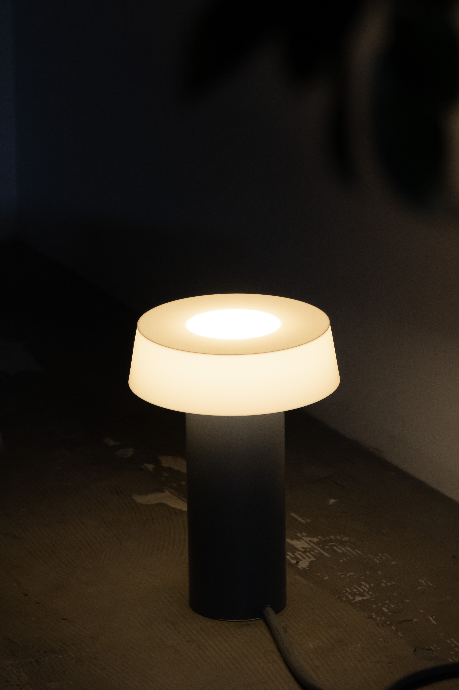
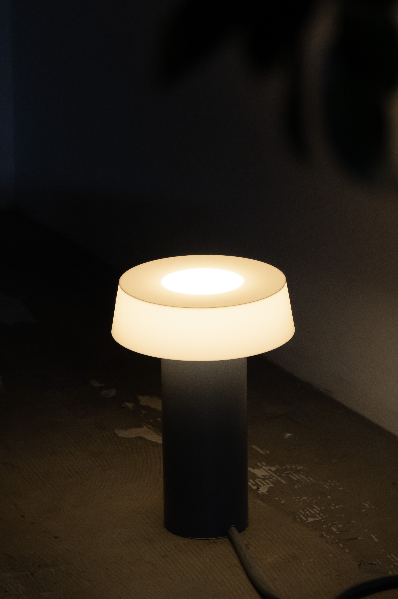

PVC lamp
塩ビパイプに3Dプリンターで出力したシェードを組み合わせたテーブルランプ。 世に出回っている素材と3Dプリンターの出力品を組み合わせることで、新しい価値が生まれるのではないかと考えた。 無骨な印象のある塩ビパイプに印象を合わせるため、グレーのコードを選んでいる。 素材の新たな魅力を3Dプリントを通じて引き出す試みである。 AD,D : Nozomi Terashima P : Nozomi Terashima CL : Tama Art University
 
